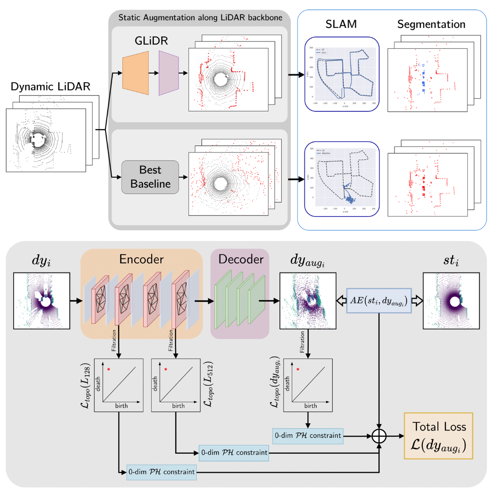
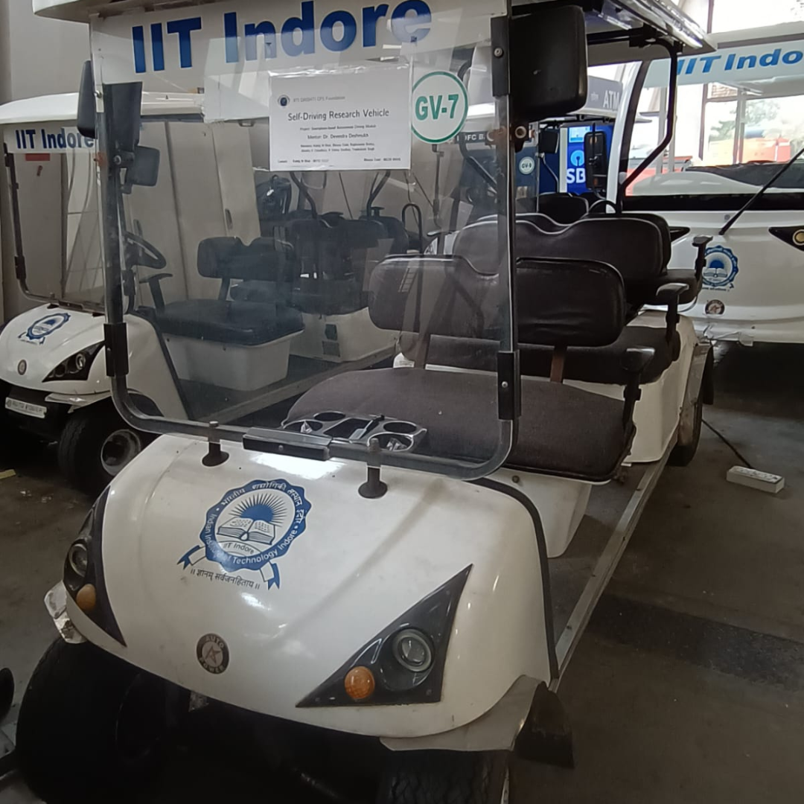
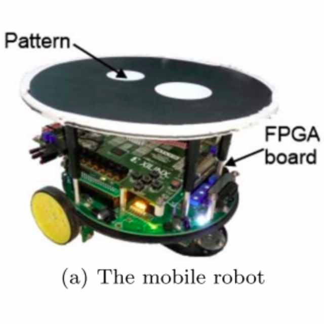
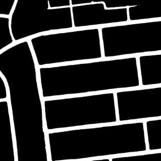
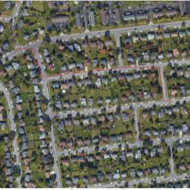

Kshitij Madhav Bhatkshitijmbhat [at] cmu [dot] edu I'm a final year undergaduate studying Mechanical Engineering at Indian Institute of Technology (IIT) Indore. I was advised by Dr. Devendra Deshmukh for my B.Tech thesis project. I did my summer internship after my junior year at Lakehead University, Canada under Dr. Thiago E. Alves de Oliveira through the MITACS Globalink Research Internship program. I spent the summer after my sophomore year at Ati Motors, Bangalore, as an intern, where I was supervised by Karthik K S and Dr. Naveen Arulselvan. I spent the winter before that at Systems and Control, IIT Bombay where I was supervised by Dr. Leena Vachhani. Email / Bio / Google Scholar / Twitter / Github |

|
Updates
[Mar '24] |
GLiDR was accepted at CVPR 2024! |
[Dec '23] |
Selected as a Graduate Mechanical Engineering Trainee (GMET) at Jaguar Land Rover, India. |
[May '23] |
Spending the summer as a research intern at Lakehead University, Canada, funded by MITACS. |
Research |
|

|
Prashant Kumar, Kshitij M. Bhat, Vedang Bhupesh Shenvi Nadkarni, Dr. Prem Kalra IEEE / CVF Computer Vision and Pattern Recognition Conference (CVPR) 2024 project page / arXiv Static scene reconstrunction with sparse LiDAR pointclouds better with GLiDR. |
Projects

|
Yeeshukant Singh, Kshitij M. Bhat, Harsh Bardhan, Sairaj Loke, Rohan Jha, Karandevsinh Khuman Akshit Raizada Omkar Shirgaonkar Shivankar Sharma Abhishek Nair 11th Inter-IIT Tech Meet, 2023 (Bronze Medal) GitHub Repository / Report / Presentation A PID Control-based framework for formation control of multiple Micro Aerial Vehicles (MAVs). |
|

|
Kshitij M. Bhat, Bhavya Dalal, Yeeshukant Singh, Jitendra Kumar Choudhary, Raghuvamsi Bokka, K. Vishnu Vardhan DRISHTI-CPS, 2022-23 Abstract A smartphone-based drive-by-wire module for level-2 autonomous driving on 6-seater golf carts. |
|

|
Kshitij M. Bhat, Vivek Yogi, Dr. Leena Vachhani Systems and Control, IIT Bombay, 2021-22 Abstract / GitHub Repository A probabilistic multi-robot coverage path planning framework with interval analysis-based obstacle avoidance for hardware-efficient FPGA mobile robots. |
|


|
Kshitij M. Bhat, Bhavya Dalal, Tanishq Selot Takshak, 2021, IIT ISM Dhanbad (Runner up) GitHub Repository / Presentation A deep learning pipeline to process high-resolution satellite images and plan the A* shortest path for an autonomous vehicle. |
Misc.
|
Vice President
Intelligent Vehicle Design and Control (IVDC) Club Organizer, Top Gear, Fluxus 11.0, IIT Indore Mentor, IIT Indore Summer of Code |
|
 |
Science and Technology Council, IIT Indore
Treasurer and Council Member Tinkerer's Lab Design Committee Member |
|
Last updated: May 2024 |